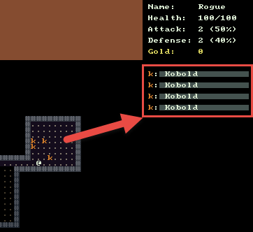

Monster Stats
During this tutorial we’ll show the monster health bars in the right hand stats panel, but only when they are in line-of-sight to the player.

Adding a DrawStats() Method to Monster
As you can see in the image above, the goal for drawing monster stats is to first display the symbol of the monster in the appropriate color followed by the monster’s name. Behind the name is a health bar that will decrease based on the percentage of monster health remaining.
Open Monster.cs and add the DrawStats() method as follows:
public class Monster : Actor
{
public void DrawStats( RLConsole statConsole, int position )
{
// Start at Y=13 which is below the player stats.
// Multiply the position by 2 to leave a space between each stat
int yPosition = 13 + ( position * 2 );
// Begin the line by printing the symbol of the monster in the appropriate color
statConsole.Print( 1, yPosition, Symbol.ToString(), Color );
// Figure out the width of the health bar by dividing current health by max health
int width = Convert.ToInt32( ( (double) Health / (double) MaxHealth ) * 16.0 );
int remainingWidth = 16 - width;
// Set the background colors of the health bar to show how damaged the monster is
statConsole.SetBackColor( 3, yPosition, width, 1, Swatch.Primary );
statConsole.SetBackColor( 3 + width, yPosition, remainingWidth, 1, Swatch.PrimaryDarkest );
// Print the monsters name over top of the health bar
statConsole.Print( 2, yPosition, $": {Name}", Swatch.DbLight );
}
}
I tried to add comments to the code to help make it easier to follow along.
Updating the DungeonMap Draw() Method
Next we need to do a bit of work to DungeonMap.Draw(). It needs an extra parameter statConsole so that when we are drawing monsters, we can also draw out their stats. It is also important that we keep a count of the number of monsters that we have drawn so far. Each time we draw a new health bar stat block for a monster we want it to be below the previous one we drew so that’s why we pass this index into monster.DrawStats().
public void Draw( RLConsole mapConsole, RLConsole statConsole )
{
// Old code
foreach ( Cell cell in GetAllCells() )
{
SetConsoleSymbolForCell( mapConsole, cell );
}
// New code starts here ...
// Keep an index so we know which position to draw monster stats at
int i = 0;
// Iterate through each monster on the map and draw it after drawing the Cells
foreach ( Monster monster in _monsters )
{
monster.Draw( mapConsole, this );
// When the monster is in the field-of-view also draw their stats
if ( IsInFov( monster.X, monster.Y ) )
{
// Pass in the index to DrawStats and increment it afterwards
monster.DrawStats( statConsole, i );
i++;
}
}
}
Cleaning up Clear() Methods
If you remember from our previous code for our Draw() methods on DungeonMap and MessageLog we call the Clear() method on the corresponding RLConsole every time anything changes. So what this means is that if a player or monster changes position, we Clear() the whole map and redraw everything. Although this may not be the most efficient way to do things, it does make the code a lot more simple and it should be good enough for our purposes.
The problem is that currently the Clear() calls are spread out in several places. Remove the console.Clear() calls in DungeonMap.cs and MessageLog.cs
Then open Game.cs and modify the OnRootConsoleRender() method.
private static void OnRootConsoleRender( object sender, UpdateEventArgs e )
{
if ( _renderRequired )
{
_mapConsole.Clear();
_statConsole.Clear();
_messageConsole.Clear();
DungeonMap.Draw( _mapConsole, _statConsole );
// Additional old code omitted...
}
}
If you run the game now you should see the monster health bars as you find them around the map. We still can’t interact with the monsters but we will be able to soon.
Code on GitHub
As always the code for the tutorial series so far can be found on GitHub:
Bored waiting for the next tutorial? The complete tutorial project is already finished and the source code is available on Github:
- Sample Roguelike game using RogueSharp and RLNet console
- Sample Roguelike game using RogueSharp and SadConsole